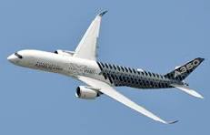

Airbus A350: A Comprehensive Overview
The Airbus A350 is a family of long-range, wide-body twin-engine jetliners developed by Airbus. It was the first Airbus aircraft with both fuselage and wing structures made primarily of carbon-fiber-reinforced polymer.
Specifications
The specifications of the Airbus A350 vary by its primary passenger variants. Below is a breakdown of the key specifications for each model.
| Specification | A350-900 | A350-1000 |
|---|---|---|
| Seating (3-class) | 300-350 | 350-410 |
| Length | 219 ft 2 in 66.8 m | 242 ft 1 in 73.79 m |
| Wingspan | 212 ft 5 in 64.75 m | 212 ft 5 in 64.75 m |
| Tail Height | 55 ft 11 in 17.05 m | 56 ft 0 in 17.08 m |
| Range | 8,500 nmi 15,750 km | 9,000 nmi 16,700 km |

Airbus A350 in Flight
Major Accidents and Incidents
The Airbus A350 has a strong safety record with no passenger fatalities. The single hull loss to date was the result of a runway collision.
- Japan Airlines Flight 516 (January 2, 2024): An A350-900 collided with a Japan Coast Guard Dash 8 aircraft upon landing at Tokyo Haneda Airport. While the A350 was destroyed by fire, all 367 passengers and 12 crew members evacuated safely. Five of the six occupants on the Coast Guard aircraft were killed.
- British Airways (April 6, 2024): A ground collision occurred at London Heathrow Airport between a British Airways A350-1000 and a Virgin Atlantic Boeing 787. The investigation determined the cause to be the absence of wing walkers during the 787's pushback. Both aircraft sustained structural damage but were later returned to service.
Variants & Airline Use
The A350 family is a modern, efficient long-range aircraft family. Major operators include Singapore Airlines, Qatar Airways, Cathay Pacific, and Air France.
- A350-900: The initial and baseline model that first entered service in 2015.
- A350-1000: A stretched version of the -900 with a higher passenger capacity, entering service in 2018.
- A350-900ULR: An "Ultra Long Range" version of the -900 with an extended range of up to 9,700 nautical miles, achieved through a modified fuel system.
- A350F: An all-cargo freighter variant of the aircraft that is currently under development.